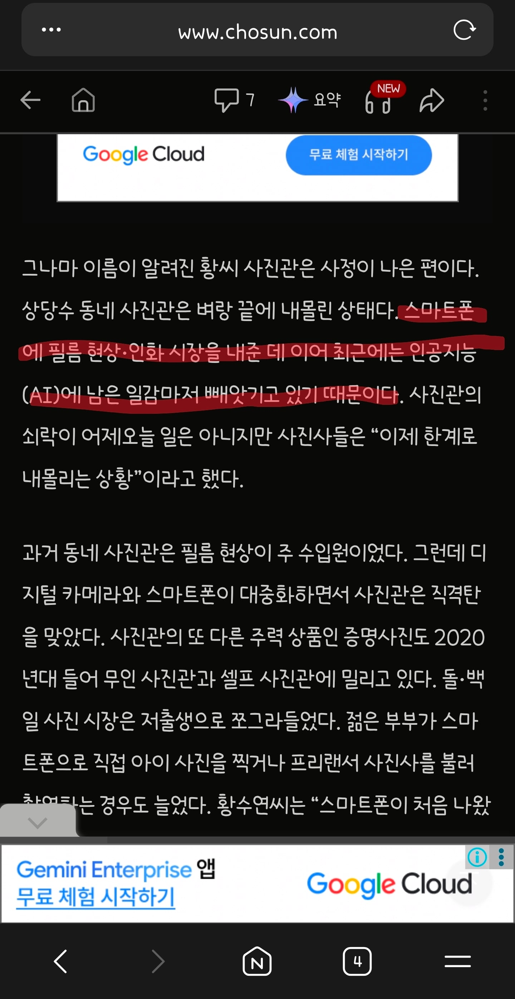

https://www.chosun.com/national/national_general/2026/08/25/OZMZPIME7REUHFWUWRRDJ3DI5Q/
사진관
이제 증명사진 같은 거 찍으러 가는 사람이 없다고 함
AI 딸깍으로 생성해서, 정장 입고 머리 정리해서 사진관까지 안 가도 된다고 하네...

https://www.chosun.com/national/national_general/2026/08/25/OZMZPIME7REUHFWUWRRDJ3DI5Q/
사진관
이제 증명사진 같은 거 찍으러 가는 사람이 없다고 함
AI 딸깍으로 생성해서, 정장 입고 머리 정리해서 사진관까지 안 가도 된다고 하네...
다이소안에 증명사진 뽑는 기계있음 2000원인가 3000원인가 가물가물하네
올ㅋ 감사
씨유에 프린팅박스라고 사진 뽑을 수 있는 기계도 있음
아니면 온라인에 출력해서 보내주는 서비스들도 많음
여권 사진도 AI로 돌려도 됨?
안되는게 맞긴 함 과도하게 보정 들어가서 다른사람 처럼 보이는거 아니면 괜춘 최근에 만들었음
?? : 여권사진 규격에 맞게 만들어줘
최근에 여권 새로 뽑을일 있어서 알아봤는데 여권 사진 AI 돌리면 공항에서 인식 실패 뜰수도 있다고 하더라
가능성이 좀 낮긴 하지만 걸리면 리스크가 커서 난 일단 사진관 갔음
애초에 여권사진은 뽀샵도하면안되고 복장이필요한거도아니라서 걍 흰배경에 폰카로찍어도됨 흰배경이 힘들어서 그거정도 만들어달라하면됨
나도 귀찮아서 길 가다가 흰 벽 있길래 거기서 셀카
찍고 그거 씀
셀카로했다고? 그건 화각땜에 얼굴 왜곡돼서 통과잘안될텐뎅 운이좋았나봄
처참할 정도로 거울이랑 똑같이 나오던데 ㅠ
안된다 해도 요즘 워낙 정밀해서 알 방법도 없을걸..
온라인신청은 반려가능성이 높고 직접 가져가서 신청하면 통과될 확률이 높디햇음
인화가 문제라 여권 만들때 3만인가 줌
플레이스토어에 당일발송해주는 어플까지 나왔더라
그런건 더비쌀듯
만원인가 줬던거같은데.. 더 말하면 넘 바이럴이라
요즘 사진도 휴대폰으로 보내고 하니까
사진관 ㅈㄴ 대충 찍어놓고 3만원 받은거 생각나네
사진 그림쟁이들은 노가다준비해야겟지?
이미 하는중이야
심지어 5~6천원에 파일만 보내면 인화해서 택배로 보내줌ㅋㅋ
사진관가도 대충찍고 다 보정해서 주더만
저출생은 니미
나도 사원증 사진넣는거
셀카찍어서 지피티한테 증명사진으로 보정 몇번 하고 했더니 진짜 잘만들어줬음 ㅋㅋ
결혼 출생 아이와 관련된 좆스티오는 다 망했으면함
눈탱이를 오지게 쳤어야지
웬만하면 사진관 가겠는데 거품이 워낙 심해야지
그래도 전문가가 낫겠지 해서 갔는데 여권사진 6장뽑는데 2.5만내니까 앞으로 걍 셀프로 해야지 싶더라고
심지어 사진파일 받으려면 5천원 더 내야하더라
사진관도 보정 잘해서 유명한 곳 많음 ㅋㅋ
인화는 어디서 하나용